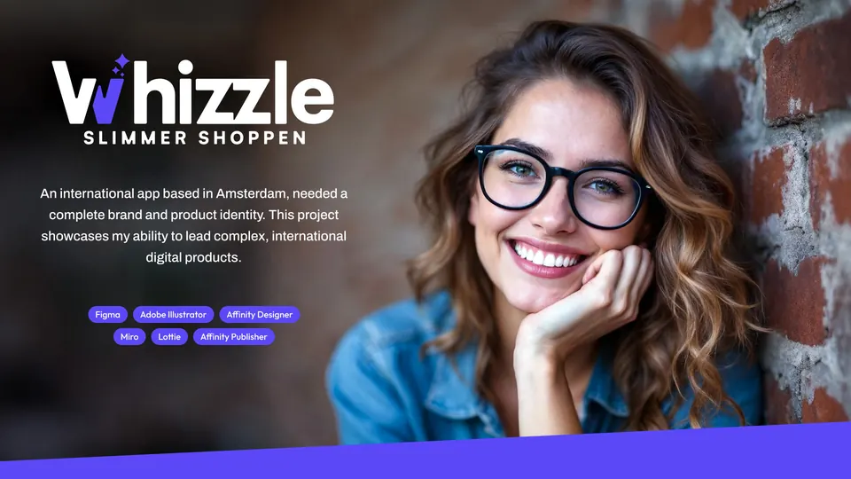
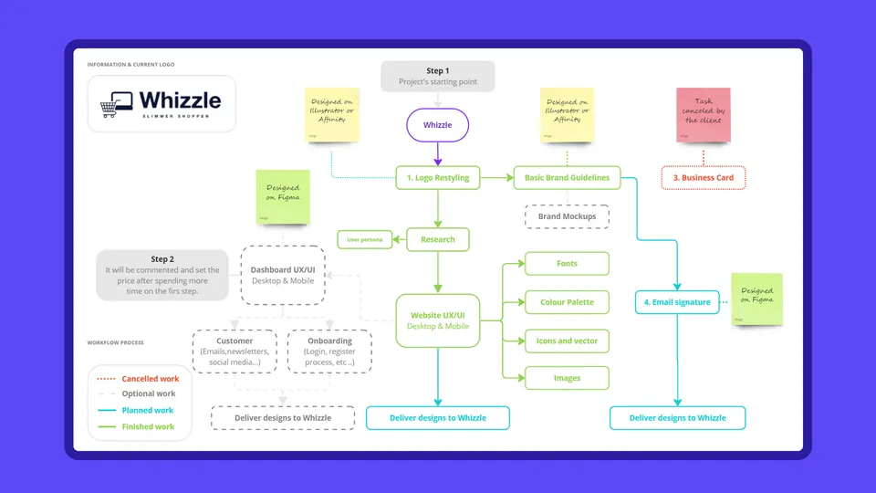
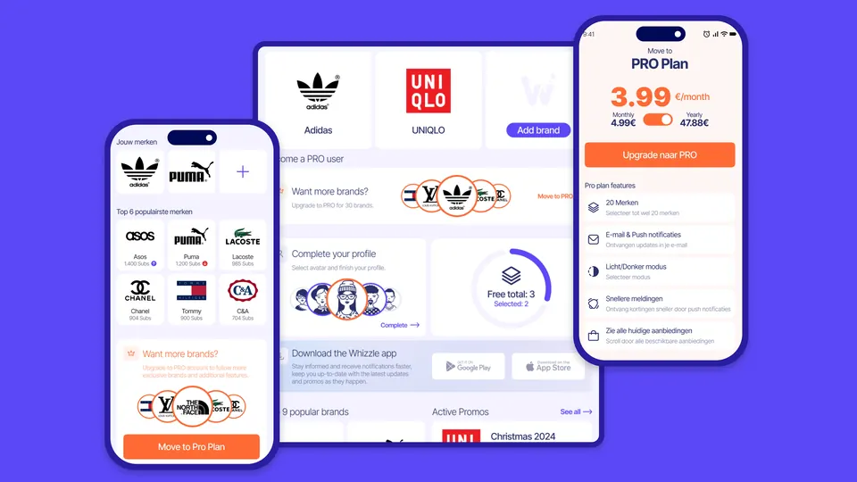

02 — Branding · Diseño de producto
Whizzle
Una app de seguimiento de ofertas con sede en Ámsterdam me fichó para rediseñar su logotipo. En un mes, mi criterio de producto ya influía en decisiones que iban mucho más allá de lo visual, y el proyecto se convirtió en una colaboración de dos años que abarcó marca, producto, sistema de diseño y marketing.

Resumen
Whizzle sigue las webs oficiales de las marcas y de los retailers y avisa a los compradores cuando los productos que les interesan entran en oferta, empezando por artículos de gama alta. Los usuarios podían seguir cinco marcas gratis y pagar para seguir más. Cuando el equipo me incorporó, la app tenía un motor funcionando detrás, pero ninguna identidad ni diseño de producto coherentes.
Lo que empezó como un rediseño de logotipo se convirtió en una colaboración de dos años en la que me encargué de todo el lado de diseño y marca del producto: estrategia y estructura, personas y user flows, el sistema de diseño, las apps de iPhone y web, la web de marketing bilingüe y cada newsletter y pieza gráfica que salió con el nombre de Whizzle. Mi socio se encargaba de la tecnología.
Reto
- 01La identidad inicial se apoyaba en colores estridentes que no encajaban con un producto premium dirigido primero al norte de Europa: había que replantear el logotipo y la marca, con un sistema completo detrás.
- 02El producto tenía que funcionar como app nativa de iPhone, como app web responsive y como web de marketing, en inglés y en neerlandés.
- 03El modo claro y el oscuro debían soportarse de forma nativa en cada pantalla, no parchearse después.
- 04Como diseñador externo, tenía que ganarme la confianza para tomar decisiones de producto sin supervisión diaria.
Proceso
Todo pasó por una fase de discovery detallada y por sesiones continuas en Miro, donde los insights del cliente, las personas de usuario y los requisitos de producto se registraban abiertamente para que nada se perdiera entre reuniones. Las reuniones semanales mantenían los hitos honestos y las entregas en plazo: esa constancia, más que nada, fue lo que convirtió un trabajo freelance en una colaboración a largo plazo.
Alcance y flujo de trabajo
Un mapa de flujo de trabajo fijó el plan desde el primer paso: restyling del logotipo, brand guidelines básicas, persona de usuario e investigación, y después el UX/UI de la web con tipografías, paleta de color, iconos e imágenes. El trabajo terminado, el planificado y el opcional se marcaron por separado, para que el alcance quedara claro.

Web y emails
Una web de marketing que explica el producto en tres pasos —explora marcas, añade marcas, recibe promos— con planes gratuito y PRO y un FAQ, además de emails transaccionales que anuncian cada nueva promoción con una única llamada a la acción.

Un rediseño de logotipo que se convirtió en una colaboración de dos años.
App y dashboard
La app de iPhone y el dashboard web responsive comparten los mismos componentes: elige tus marcas, sigue las promos activas y pasa a PRO, localizados en neerlandés para el primer mercado.

Sistema y campaña
Detrás del producto está el sistema de diseño: avatares, escala tipográfica, variaciones de color y de logotipo y componentes de email. Encima, una dirección de imagen de campaña dio a la marca un rostro humano.

Solución
Un sistema de marca y producto completo y vivo: logotipo y brand book, un sistema de diseño en Figma construido con principios de atomic design, apps nativas de iPhone y web responsive en modo claro y oscuro, una web de marketing bilingüe y los newsletters y piezas gráficas que lanzan cada nueva promoción.
Decisiones clave
- 01Sin publicidad intrusiva: habría hecho que Whizzle se pareciera a los productos de los que quería diferenciarse, así que elegimos un modelo freemium: cinco marcas gratis, más con suscripción.
- 02Un rebranding para el norte de Europa: alejé la identidad de los colores estridentes hacia tonos neutros y tranquilos, para que el producto resultara premium y fiable en su primer mercado.
- 03No lanzar: tras las pruebas, decidimos juntos no publicarlo; ya existían herramientas similares y optamos por no arriesgar más dinero.
Mirando atrás
Lanzaría antes una versión mínima viable, en lugar de pulirlo todo primero, para comprobar la demanda antes y gastar menos en perfeccionar lo que quizá el mercado no necesitaba.
Impacto
Enseñamos la app a unas 400 personas, sobre todo de nuestro círculo de early adopters en Países Bajos, Bélgica, Alemania y Suiza: una validación informal, no un estudio controlado. Unas 350 respondieron de forma positiva, la calificaron de intuitiva y les gustó su look and feel; unas 50 dieron feedback detallado que usamos para mejorar el user flow y dar forma al modelo de suscripción. La app nunca llegó a un lanzamiento público.